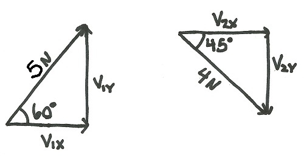

Vector Addition
Vectors are added visually by putting them tip to tail as shown in the diagram below. The sum of all the vectors is the vector that goes from the tail of the first vector to the tip of the last vector. For example, the sum of the three blue vectors to the right is the green vector. The easiest way to add vectors is add the components of the vectors. The X and Y components of all the blue vectors are shown in red. To perform vector addition by adding the components, follow the procedure below.
The Sum of the Three Blue Vectors is the Green Vector
Vectors in Component Form
- 1. First break all the vectors down into their X, Y and (for 3-D vectors) Z components. If the vectors is in component form this will already be done for you (the picture to the right shows vectors in component form), if the vector is given as a magnitude and direction you will need to use some geometry to solve for the components.
- Add the magnitudes of all the X components together. This will give you the X component of the sum of all the vectors. Repeat this with the Y and Z components to get the Y and Z components of the sum of all the vectors.
- Now that you have the X, Y and Z components of the sum vector, you can write the sum out in component form, or you can use geometry to convert it to a magnitude and direction.
Worked Problems
Worked Problem 1:
Add the following two vectors. Write the sum in component form.
| Work | Comments |
|  |
The first step is to break the two vectors down into their X and Y components. The diagram shows the right triangles that the components and the original vectors form, which will be used to solve for the components. |
|
Here are the equations and the values for each of the vector components. |
|
|
Next we add all the X components together and add all the Y components together. This gives us the X and Y components of the sum. |
|
|
|
Finally, we put the answers we got in the previous section into component form. |
Worked Problem 2:
Add the following vectors. Represent the answer as a magnitude and a direction.
| Work | Comments |
|
The vectors are already in component form so we can directly extract the X, Y and Z components from each vector. We add these values up to find the X, Y and Z components of the sum of the three vectors. |
|
|
We can then write out the solution in component form. |
|
|
Drawing a diagram of the solution vector can help us find the sum in magnitude and direction form. |
|
|
We can then use the right triangles formed to find the magnitude and the two angles that indicate the direction of the force. |
 |
| Author: Jacob Moore has liscenced this work under a Creative Commons Attribution-NonCommercial 3.0 Unported License. |